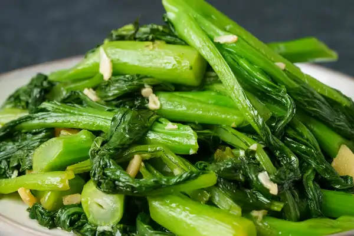

Easy Madeleine Recipe

Stir-fried choy sum is delicious, it's nutritious, and it comes together in a flash. The quick cooking time means that yes, you can throw it onto the dinner table in just a few minutes, but it also means that your greens stay bright, tender, and sweet.
Ingredients
- 1 lb choy sum
- small amount ginger
- 5 cloves garlic
- 2 tbsp cooking oil
- 1 tsp cooking wine
- 1 tsp sugar
- 0.50 tsp salt
Steps
- Cut choy sum
- Prepare aromatics
- Stir-fry aromatics
- Stir-fry choy sum
- Cover with lid & final seasoning